Recreating John Snow’s ‘Broad Street Pump’ Map


Preamble
In this demonstration lab, we will first download the recreation data of John Snow’s ‘Broad Street Pump Map’ and run a series of GIS analysis tasks to derive insight and produce quantitative results about both the location of the pumps and the resulting deaths from the Broad Street Pump itself.
Data
The data for this demonstration lab comes from the QGIS project located HERE.
To start, directly download a prepared, compressed directory which includes all necessary data as well as a ArcGIS .mxd project file.
Once complete, extract the zipped directory and open the directory folder. The results - including the project .mxd - should appear as follows:
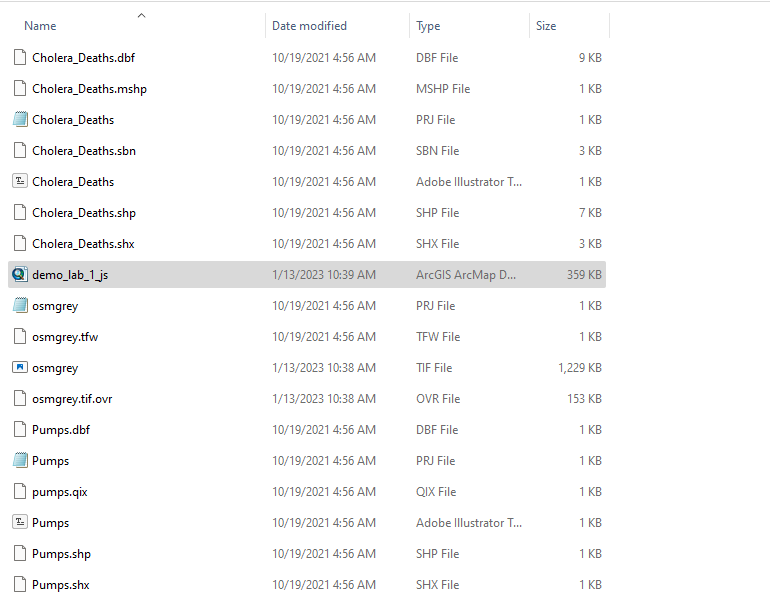
Step 1: Load Data
- Navigate to the directory folder
demo_lab1-JS_datathen double-click thedemo_lab_1_js.mxdfile. This will prompt ArcGIS Desktop to load the project on the machine. The Table of Contents should feature the following 2 vector layers and 1 raster layer (.tif):


Step 2: Create Thiessen Polygons
Thiessen polygon boundaries define the area closest to each feature relative to all other features. Thiessen polygons are generated from a set of three or more features. In this case, our features will be the Pumps points.
Thiessen polygons are also referred to as spatial monopoly or Voronoi diagrams. This type of analysis assumes that there are clusters of features that are distinct within the larger dataset of features; again in this case, the Pumps points are our input features.
This type of analysis needs planar units, not degrees, for valid output results. We will touch on this issue in class 2, and more in depth in class 6 - Map Projections. For now, note that the project utlizes the British National Grid with a linear unit of meter, thus we don’t need to adopt another map projection in order to proceed with analysis.


meter.ArcGIS Desktop provides many analysis tools via the ArcToolbox easily accessible on the top tool bar as the red ‘toolbox’:
However, the Search tool is a good way to navigate to analysis tools when you may be unsure of the exact tool or the exact name of the tool. Here we will enact Search and navigate to the correct tool by typing in thiessen:
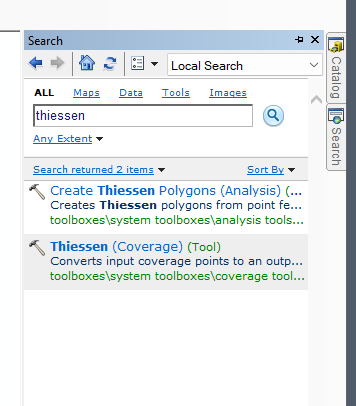
thiessen.Utilizing the Create Thiessen Polygons tool under the Analysis section of ArcToolbox, we will input the Cholera Deaths and output to the Default.gdb location:
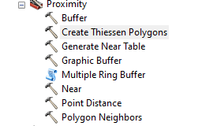
Create Thiessen Polygons Analysis Tool within the Proximity Toolbox.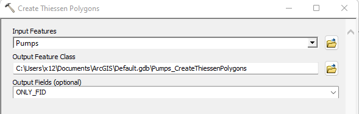
Create Thiessen Polygons Analysis Tool.The results of the analysis tool should be a new polygon feature that represents the ‘clusters’ or ‘neighborhoods’ of distinct pump locations. If we open the attribute table of the new polygon feature, we can ascertain which polygon features the predominance of death locations via the ID attribute:
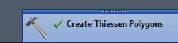
Create Thiessen Polygons Analysis Tool - when complete will show a green checkbox with hammer.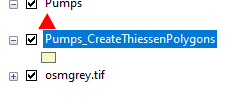
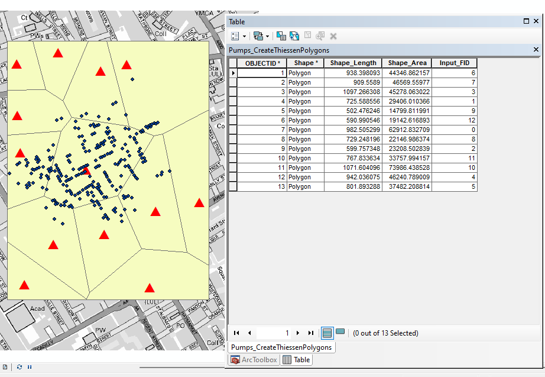
The resulting Thiessen Polygons tell us the extent of distance, or travel, for each pump. This gives us an idea of how far (euclidean distance) one would travel efficiently within one polygon before crossing into another polygon where another pump would be most efficient to our travel.
What this spatial analysis does NOT tell us is how many deaths have occurred within each pump’s ’neighborhood, i.e. its thiessen polygon. To do this analysis task, we will turn to Step 3 below.
Step 3: Report Cholera Deaths within each pump thiessen polygon
To do this next analysis step, we will utilize a overlay technique known as Spatial Join. In this process, we are able to transpose attributes from one vector layer into another. In our case, we want to aggregate the death counts at each point (at each of John Snow’s house census locations) and associate those counts with an unique ID from each thiessen polygon.
To start, we can easily see just from the mapping thus far that the thiessen polygon for the ‘Broad Street Pump’ features a predominance of death points. We can assume that this concentration likely also contains the top aggregate count of deaths from those points within their respective thiessen polygon. So we can test this initial exploratory assumption by a Spatial Join followed by a Table Summary.
Search for Spatial Join as we did for the previous tool. This will point to the following tool dialog box. Input Cholera_Deaths as the Target Features and the Pumps_CreateThiessenPolygons as the Join Features. We will use a JOIN_ONE_TO_ONE operation and accept the default output location.
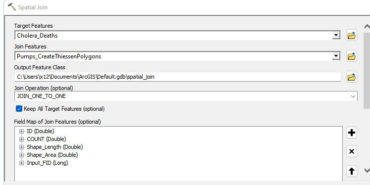
Spatial Join tool dialog box with correct order of inputs, accepting the default output location.Once the tool has run, we will receive a new points feature dataset that now has all the original Cholera Death points but also attributes from the thiessen polygons. We want to know for each death point, which thiessen polygon is it within? To help us understand which is which amongst the polygons, we can first label them by their ID value for display within the map data frame.
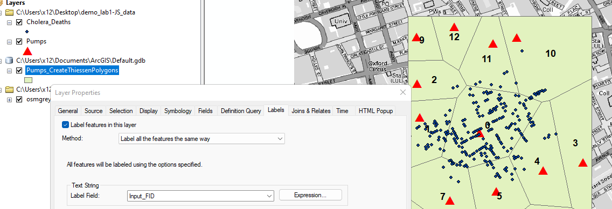
Clearly, polygon ID 0 in the example contains the predominant death locations.
Step 4: create a summary aggregation for total Cholera Deaths within each thiessen polygon
Following a successful spatial join, we will now Summarize within the attribute table. Here we will target the death count using the SUM statistic for the Input_FID column. To start, we right-click on the Input_FID column, choose Summarize and point the field option to Input_FID. Keep in mind this column is thiessen polygon value that we gain through the spatial join to each Cholera Death point. Next, we choose Count > Sum for the summary statistic. We accept the default output table location and run the tool.
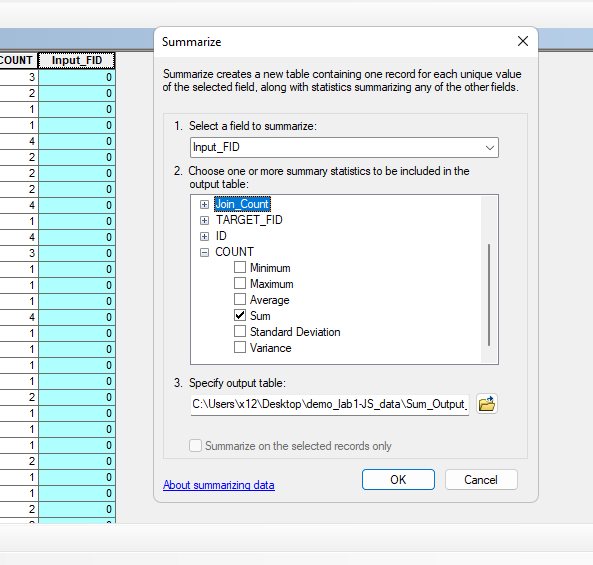
Summarize within the spatial join attribute table.As we review the result, we should see the following three column attributes returned via Summarize:
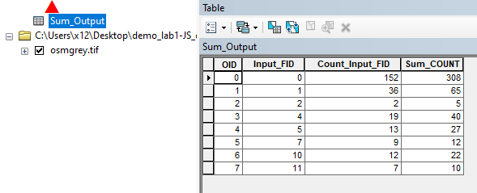
Summarize results table.Input_FID: this is the original thiessen polygon ID.Count_Input_FID: this is the count of Cholera Death points perInput_FID.Sum_COUNT: this is the new aggregated count of ALL deaths, regardless of the number of Cholera Death points, per eachInput_FIDthiessen polygon.
Concluding Remarks
In this exploratory analysis, we were able to derive an important new geometry (thiessen polygons) based on distances between the distribution of water pumps within the John Snow study area. Further, we were able to quantify the total deaths per our distance areas (thiessen polygons). In our findings, we see that the thiessen polygon for the central ‘Broad Street Pump’ by far contains both the most Cholera Death locations and Cholera Death occurrences.